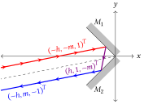

Optics in Homogeneous Coordinates, Coordinate Tranformations
Picking up from last time…

In the previous post I defined an oriented line by considering the equation of a line in 2D: $ ax+by+c = 0 $, which we can abbreviate as the vector of coefficients \((c,a,b)\). In this post, we want to perform some geometric operations on this line. Namely, we want to move (translate) it, rotate it about the coordinate origin, and switch its orientation (from left-to-right to right-to-left). Once we understand how to manipulate the line, we’ll perform these same transformations on our ABCD matrices.
For the sake of brevity, I’ll give the results here and put the derivations at the bottom.
To translate a ray by a displacement vector (u, v) we multiply the ray vector from the left by the matrix \[ T(u,v) = \begin{pmatrix} 1 & -u & -v \\ 0 & 1 & 0 \\ 0 & 0 & 1 \end{pmatrix}. \] In other words, the new ray r’ = T r.
Similarly, rotations of the rays are represented by the matrix \[R(\theta) = \begin{pmatrix} 1 & 0 & 0 \\ 0 & \cos \theta & -\sin \theta \\ 0 & \sin \theta & \cos \theta \end{pmatrix},\] giving a new ray r’ = R r.
For the ray transfer matrices, both the row space and column space of the matrix must be transformed. If we rotate and then translate, the new matrix is \(M' = TRMR^{-1}T^{-1}\).
One way to understand why we need two copies of the transformation matrices is this – our ABCD matrices for optical elements assume the element is located at the origin. If we want to place that surface anywhere else, we have to move our coordinates such that the desired optical element location is at the origin, install our element, then restore the original coordinates.
Why this matters
Being able to translate and rotate our lenses and mirrors lets us model optical systems just as they are built on our optical table. We don’t have to unfold our beam paths to model them. And we can see what happens if a lens is decentered or tilted (e.g. when your professor bumps a random mirror and you have to realign everything, not that I have any experience with that…).
Also, now we have a way to mathematically describe not just optics, but also opto-mechanics. We can model beam-steering elements like galvos, motorized mirrors, or acousto-optics. We can do tolerancing of layouts or vibration analysis with simple matrix multiplication. To an experimentalist like myself with only a handful of math tools in my pocket and insufficient patience to code all of this up in Zemax, this is exciting!
Now, the skeptics will say this is not new physics. We learning nothing here that we haven’t seen before. This is true, but it misses the point. My motivation is pragmatic: do more stuff with simple tools (well, as long as you think multiplying 3×3 matrices isn’t too large of a price).
Examples
Right-angle mirror pair

I have several examples in the paper2, but my favorite is a common lab optic: a right-angle retroreflector. The setup is simple: we have two flat mirrors that intersect at right angles. Any incoming ray will be retroreflected opposite its original direction, offset by some distance.
The RTM for the upper mirror (\(M_1\)) is generated by a \(45^{\circ}\) rotation of a plane mirror situated at the origin:
\[ \begin{aligned} M_1 &= R_{45^{\circ}}M_\text{plane mirror}R_{45^{\circ}}^{-1}, \\ &= \begin{pmatrix} 1 & 0 & 0 \\ 0 & 1/\sqrt{2} & -1/\sqrt{2} \\ 0 & 1/\sqrt{2} & 1/\sqrt{2} \end{pmatrix} \begin{pmatrix} -1 & 0 & 0 \\ 0 & 1 & 0 \\ 0 & 0 & -1 \end{pmatrix} \begin{pmatrix} 1 & 0 & 0 \\ 0 & 1/\sqrt{2} & 1/\sqrt{2} \\ 0 & -1/\sqrt{2} & 1/\sqrt{2} \end{pmatrix} \\ &= \begin{pmatrix} -1 & 0 & 0 \\ 0 & 0 & 1 \\ 0 & 1 & 0 \end{pmatrix}. \end{aligned} \]
Similarly, the second mirror (\(M_2\)) has the RTM \[ M_2 = R_{-45^{\circ}}M_\text{plane mirror}R_{-45^{\circ}}^{-1} = \begin{pmatrix} -1 & 0 & 0 \\ 0 & 0 & -1 \\ 0 & -1 & 0 \end{pmatrix}. \] We choose an incoming ray \({r}_0 = (-h,-m,1)^T\) with \(h>0\) such that it will strike mirror \(M_1\) first, yielding the reflected ray \[ {r}_1 = M_1 {r}_0 = (h,1,-m)^T. \]
This ray follows the line \(h +x-my =0\), propagating from right to left (\(b < 0\)). After the second reflection in \(M_2\) the final ray is \[ {r}_2 = M_2 {r}_1 = (-h,m,-1)^T, \] which is antiparallel to the incoming ray, as expected, with a \(y\) intercept of \(-h\) and propagating right to left (\(b < 0\)).
That’s a piece-wise description, but we can multiply the two mirror matrices to get the system matrix for the retroreflector:
\[ M_\text{ra} = M_2 M_1 = \begin{pmatrix} 1 & 0 & 0 \\ 0 & -1 & 0 \\ 0 & 0 & -1 \end{pmatrix}. \] Multiplying this matrix by the original ray gives \(r_2\) above in one step.
Right-angle prism
We can also upgrade our retroreflector to a right-angle prism retroreflector by inserting refracting surfaces before and after the mirror pair. We’ll assume the prism is made of glass with an index of refraction of n. In the mirror setup above, the intersection of the mirrors was located at the coordinate origin. We’ll place the hypotenuese of the prism a distance d to the left of the origin.
The matrix for the entrance surface is a refracting surface from index of refraction 1 to index of refraction n, translated to the left by d: \[ \begin{aligned} S_1 &= T(-d,0)\,M_\text{ref}(1,n)\,T(d,0) \\ &= \begin{pmatrix} 1 & d & 0 \\ 0 & 1 & 0 \\ 0 & 0 & 1 \end{pmatrix} \begin{pmatrix} 1 & 0 & 0 \\ 0 & 1/n & 0 \\ 0 & 0 & 1 \end{pmatrix} \begin{pmatrix} 1 & -d & 0 \\ 0 & 1 & 0 \\ 0 & 0 & 1 \end{pmatrix} \\ &= \begin{pmatrix} 1 & (d-nd)/n & 0 \\ 0 & 1/n & 0 \\ 0 & 0 & 1 \end{pmatrix} \end{aligned} \] The matrix for the exit surface is constructed similarly: \[ \begin{aligned} S_2 &= T(-d,0)\,M_\text{ref}(n,1)\,T(d,0) \\ &= \begin{pmatrix} 1 & nd-n & 0 \\ 0 & n & 0 \\ 0 & 0 & 1 \end{pmatrix} \end{aligned} \] Now, we just combine these two surfaces in the correct order with the right-angle mirrors from above to get our prism matrix: \[ \begin{aligned} M_\text{prism} &= S_2 M_\text{ra} S_1 \\ &= \begin{pmatrix} 1 & 2d(n-1)/n & 0 \\ 0 & -1 & 0 \\ 0 & 0 & -1 \end{pmatrix} \end{aligned} \] What does this matrix tell us? We still get a retroreflector, as expected, but the outgoing ray is slightly displaced relative to the mirror-pair case. For our now canonical incoming ray \(r = (h,m,-1)^T\), we get an outgoing ray \[ r' = M_\text{prism} r = \begin{pmatrix} 1 & 2d(n-1)/n & 0 \\ 0 & -1 & 0 \\ 0 & 0 & -1 \end{pmatrix} \begin{pmatrix} h \\ m \\ -1 \end{pmatrix} = \begin{pmatrix} -h + \frac{2md(n-1)}{n} \\ m \\ -1 \end{pmatrix}, \] showing a displacement in the height of \({2md(n-1)}/{n}\) relative to the mirror pair (i.e., setting \(n=1\)).
What’s missing
Aberrations
These new tools let us analytically lay out our optical setup, but we are still only working in the paraxial limit. That means our angles and beam displacements can’t get too large else our errors will accumulate, particularly for refractive elements and spherical surfaces. (Plane mirrors are perfect!) Specifically, our method says nothing about aberrations because those are, by definition, nonlinear in the ray height and slope, and we are using a strictly linear formulation. Can we extend these ideas to low-order aberrations? I’m looking into a few ideas others have published recently3, so stay tuned. Computer tricks like automatic differentiation might yield a simple, compact way to look beyond the paraxial limit without doing full-bore ray tracing.
The Third Dimension
Extending the ray matrices to three dimensions is fairly straight forward, but a bit cumbersome as we need 6×6 matrices. Lin has one method that keeps things looking similar to the 2-D case4, but I’m looking into the prefered representation of the computer graphics folks: Plücker coordinates, which are a true homogeneous representation of lines in 3D, and thus preserve geometric information in a covariant way.5 This will be important to investigating points and planes (see next post!).
Next time…
In the next post I’ll show how use a little algebra trick to apply the ray transfer matrices to imaging problems by directly mapping points from the object space of the optical system to the image space. This is nice because we no longer have to use intersecting rays to find image locations or magnifications. The key is using a homogeneous representation of our points.
And in the post after that, I’ll look beyond the paper and shift to the other major application of the ABCD matrices: Gaussian laser beams.
Appendix: Derivations
Here I walk through how the translation and rotation matrices are constructed. The rotation matrices you may have seen before, although probably not in homogeneous coordinates. The translation matrices are unique to the homogeneous representation. In traditional 2D matrix algebra, translation is not representable by matrix multiplication. Instead, you have to add vectors directly. Being able to put all of the Euclidean transformations into the same form is one of the major benefits of using homogeneous coordinates.
Translation
Our first task is to shift our line by a constant vector (u,v). Equivalently, we can move our coordinate axis by the opposite translation. In other words, we can do \( x \rightarrow x-u, y \rightarrow y-v \). Substituting this change into the line equation, we have \[ a(x-u) + b(y-v) + c = 0, \] \[ ax + by + (-au -bv + c) = 0. \] The coefficents are transforming line \( a \rightarrow a, b \rightarrow b, c \rightarrow c-au-bv \). Working backwards, we can represent this transformation of the coefficients as a matrix equation: \[ \begin{pmatrix}c \\ a \\ b \end{pmatrix} \rightarrow \begin{pmatrix} 1 & -u & -v \\ 0 & 1 & 0 \\ 0 & 0 & 1 \end{pmatrix} \begin{pmatrix}c \\ a \\ b \end{pmatrix}. \] We identify the matrix here as the translation operator and we’ll give it the name \[ T(u,v) = \begin{pmatrix} 1 & -u & -v \\ 0 & 1 & 0 \\ 0 & 0 & 1 \end{pmatrix}. \] Note that only the c coefficient changes. If our line coefficients happend to be normalized such that \( a^2 + b^2 = 1 \), then c is the distance of the line from the origin. What does this mean? Because only c is changing, any translation of a line can be interpreted as motion towards or away from the origin. Any motion perpendicular to that would simply shift the line along itself, resulting in no change to the line.
Rotation
Now we’d like to rotate the line. Rotation of the line by an angle θ about the coordinate origin is equivalent to rotating the axes by the opposite angle -θ. This looks like the usual rotation operation in the xy plane: \[ x \rightarrow x (-\theta) + y (-\theta) = x (\theta) - y (\theta), \] \[ y \rightarrow x (-)(-\theta) + y (-\theta) = x (\theta) + y (\theta),\] where I’ve used the odd/even nature of sin/cos to simplify the signs.
Substitute these changes into our line equation: \[ a(x \cos\theta - y \sin\theta) + b(x \sin\theta + y \cos\theta) + c = 0, \] \[ (a \cos \theta + b \sin\theta)x + (-a \sin\theta + b \cos\theta)y + c = 0. \]
Footnotes
T. Corcovilos. Beyond the ABCDs: A projective geometry treatment of paraxial ray tracing using homogeneous coordinates. American Journal of Physics 91(6):449-457 (2023). doi:10.1119/5.0083069 Preprint at arXiv:2205.09746↩︎
T. Corcovilos. Beyond the ABCDs: A projective geometry treatment of paraxial ray tracing using homogeneous coordinates. American Journal of Physics 91(6):449-457 (2023). doi:10.1119/5.0083069 Preprint at arXiv:2205.09746↩︎
Lin, P.-D.; Hsueh, C.-C. 6×6 Matrix Formalism of Optical Elements for Modeling and Analyzing 3D Optical Systems. Appl. Phys. B 2009, 97 (1), 135–143. https://doi.org/10.1007/s00340-009-3616-7. Lin, P. D.; Johnson, R. B. Opt. Express 2019, 27 (14), 19712. doi:10.1364/OE.27.019712.↩︎
Lin, P. D. New Computation Methods for Geometrical Optics; Springer Series in Optical Sciences; Springer Singapore: Singapore, 2014; Vol. 178. ISBN: 978-981-4451-79-6.↩︎
Wolf, K. B. Optical Models and Symmetry. Chapter 4 of Progress in Optics; Elsevier, 2017; Vol. 62, pp 225–291. https://doi.org/10.1016/bs.po.2016.12.002.↩︎